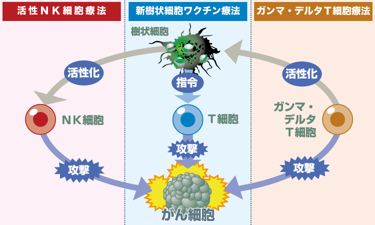
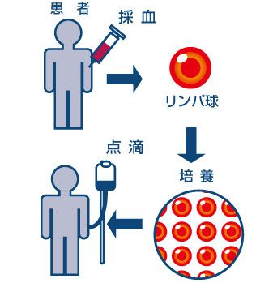
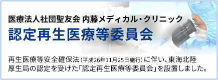
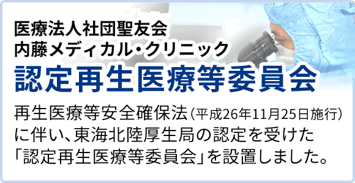

免疫力を高めたい方、癌予防の方にも最適
がん治療、がん予防の専門クリニック (2002年11月開設)20年目の実績
がん治療 免疫療法
♦ 名古屋駅からＪＲで約3分 金山総合駅南口徒歩3分


免疫力を高めたい方、癌予防の方にも最適
がん治療、がん予防の専門クリニック (2002年11月開設)20年目の実績
♦ 名古屋駅からＪＲで約3分 金山総合駅南口徒歩3分
〒460-0024 名古屋市中区正木4-8-7れんが橋ビル５階 TEL052-681-1731
パンフレットと院長書籍「がんに克つ」を無料でお送りします。お気軽にご連絡下さい
当院の免疫療法は、患者さんから頂いた血液を用いて行う副作用の少ないがん治療で、ほとんどのがんで治療が可能です。がん予防でされる方も多いです
診療日«完全予約制»
| 時間 | 月 | 火 | 水 | 木 | 金 | 土 | 日 |
|---|---|---|---|---|---|---|---|
| 8時30分～12時30分 | ○ | ○ | ○ | ○ | ○ | ○ | － |
完全予約制の為お電話でご予約して下さい
予約受付：月～土 午前8時15分～午後4時45分土曜は12時まで日祝休み TEL052-681-1731
名古屋市中区正木4-8-7れんが橋ビル５階 (金山総合駅南口徒歩3分）

培養センターを併設する事により、検体（血液）の速やかな処理、即時に培養を行う事が可能です。クリニック部門と培養部門が連携し徹底した管理下で行っています。ご予約いただければ培養センターの見学も可能です。5分～10分の説明もできます。
がん治療において患者さん自身が、がんと闘う精神力とがん克服の希望を持ち続けることが非常に大切です。がん治療の効果を高めるためにも患者さん自身がモチベーションを高める事と、医師が患者さんへ積極的ながん治療を行うのと同時に、患者さんに寄り添う精神面のフォローがとても重要なのです。
がん治療の技術は日進月歩です。
医師は常に新しい戦略で、より効果的な治療法をいち早く取り入れていく事と、患者さん自身ががんと闘う精神力とがん克服の希望を持ち続けることが非常に大切です。
「20年にも及ぶがん免疫療法の経験から、患者さん自身のがん克服への強い意志が免疫療法に良い効果をもたらすと実感しているからこそ、こうした点を重視するのです。医師のサポートを受けて患者さん自身が自らの免疫を活性化させる為に積極的にがん治療へ参加する事が必要です。そして強い闘争心と共に力を合わせて闘っていく事、前向きな姿勢が非常に大切なのです。ストレスが免疫力を下げるのと同じく、頑張ろうという強い闘争心を持つ、前向きな気持ちが免疫力に影響を与え、良い結果が出るのです。がんとの闘いの中で、がん克服後の素晴らしい夢のある未来を思い描くことが免疫療法にもよりよい効果が出るというのが長年の実感です。患者さんの多くは精神的にも肉体的にも苦しみや不安な闘いが続きますが、その中で、がんとの闘いという新しい目標を強く持つ事によってがん克服のチャンスもあるのです。」
と患者さんへ説明します。
「医師である私は手助けをする立場です。患者さん自身ががんと闘い、そして免疫療法は患者さんであるあなたが主役です。患者さんと一緒に頑張れる気持ちをまず作っていくこと。医師は病気を診るだけでなく患者さんそのものを診るという視点が実際にがん治療を行う医師にとっては最も大切なのです。」
これが当院の治療方針です。
当院のがん免疫療法は、活性NK細胞療法と新樹状細胞ワクチン療法、ガンマ・デルタT細胞療法などがあります。

活性NK細胞療法はNK（ナチュラルキラー）細胞を使用した治療法でNK細胞自体に生まれ持ってがん細胞を攻撃する力を備えています。樹状細胞は攻撃目標となる目印をがん細胞から採取して、その目印をT細胞へ伝えて攻撃するよう指令を出す細胞です。攻撃指令を受けたT細胞はがん細胞を攻撃します。ガンマ・デルタT細胞はNK細胞と同じように自らがん細胞を発見して攻撃する細胞なのですが、がん細胞を見つける方法が特徴的で患者さんへの適用条件が限定されます。
免疫細胞ががん細胞を攻撃している様子
がんは長い年月をかけて成長するものです。1cmのがんであっても、がん細胞の数は数億から数十億とも言われています。このがん細胞を攻撃するにはリンパ球の数も大量に増やす必要があります。そこで当院の活性NK細胞療法では専用の無菌細胞培養施設（培養センター）にて、患者さんから頂いた血液を分離してNK細胞を取り出し、NK細胞の数を通常の20倍から60倍（個人差があります）にまで増殖して、細胞を活性化させて患者さんへ投与します。

活性T細胞療法やガンマ・デルタT細胞療法でも同様に増殖と活性化を行い、投与します。
新樹状細胞ワクチン療法も同様に患者さんから頂く少量（約60cc）の血液から約2週間掛けてワクチンを完成させ、患者さんへ投与します。新樹状細胞ワクチン療法の樹状細胞は免疫細胞の司令塔役割をする細胞の為、実際にがん細胞を攻撃する細胞が必要です。その為、樹状細胞から指令を受け取るT細胞を増殖と活性化を行い投与する活性T細胞療法を併用していきます。
一つの治療だけでなく複数の免疫療法を行う事で免疫細胞のバランスがとれ、より良い治療効果が望める可能性もあります。
当院の免疫療法の特徴として、増殖と活性化をした免疫細胞を投与するだけでなく、患者さんのメンタル面のケアも施しています。がんは免疫の病気とも言われています。その為、がんを克服しようとする患者さん自身の力ががん治療にはプラスの治療効果を発揮する事となります。患者さん自身ががん治療の主役としてがん克服への道を歩んでいけるようサポートします。
当院からのお願い

